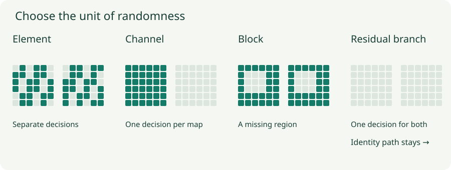

Structured Dropout and Stochastic Depth: Choose What Disappears
Compare element, channel, block, and residual-branch masks and see why their correlations matter.
An image feature is often repeated at nearby spatial positions. Removing one activation may leave almost the same information next door. A sequence feature may need to persist across timesteps. A residual network has an identity path that can remain useful even when an entire learned branch disappears. These structures motivate masks larger than a single scalar.
1. The mask’s shape determines what can be recovered
With independent element dropout, each location has its own Bernoulli mask. With channel dropout, one mask value is broadcast over every spatial location of a channel. Both can have the same probability of retaining any one activation, but their covariance differs.
For two fixed activations $a$ and $b$ sharing a keep mask $m$, inverted scaling gives $\tilde a=ma/q$ and $\tilde b=mb/q$. Because $m^2=m$,
With independent masks this conditional covariance is zero. Sharing a mask means the model cannot reconstruct a missing feature simply by finding another retained location within that same channel. The pattern of missing information changes even when the average number of removed entries is identical.

2. Spatial masks: channels and blocks
For a tensor with shape batch × channels × height × width, an element mask has that full shape. A channel mask can have shape batch × channels × 1 × 1 and broadcast over space. This is commonly called spatial dropout or channel dropout. State the dimensions explicitly because library names differ.
DropBlock removes contiguous regions of feature maps. It samples candidate centers, expands them into blocks, combines overlapping dropped regions, and rescales retained activations. A nominal probability for block centers is not the same as the resulting fraction of removed pixels: block size, overlap, and boundaries all matter.
For a square feature map of side $H$ and block side $b$, the paper uses the approximate center probability $\gamma\approx (1-q)H^2/[b^2(H-b+1)^2]$. The numerator is the desired number of removed cells; the denominator accounts for cells per block and eligible centers. Overlap makes it an approximation. Larger blocks make recovering a deleted local feature from its immediate neighbors more difficult.
3. Lab: inspect what disappears together
Two 8 × 8 feature maps
Change the mask structure and sample again. The block option deliberately uses one uniformly positioned square per map to isolate geometry; it is not the full multi-center DropBlock sampler. It reports its actual removed area.
With channel masks, the retained fraction can vary dramatically from one draw to another because this tiny example has only two channels. That is expected. At a branch level, a single decision removes both maps together. Repeated sampling illustrates correlated missingness, not measured accuracy of a trained model.
4. Sequence masks: preserve a consistent missing-feature pattern
Independently replacing recurrent features at each timestep changes the information available to the recurrence repeatedly. A locked mask instead samples once for a sequence and reuses that mask across time. For a batch × time × features tensor, a batch × 1 × features mask expresses this choice.
Sharing over time does not mean sharing over every example. It also does not mean that any placement of a locked mask has the same theoretical interpretation. The recurrent-dropout construction by Gal and Ghahramani specifies where masks enter the recurrent computation. In attention models, dropping individual attention probabilities and dropping entire heads are likewise different operations with different mask shapes.
5. Stochastic depth drops a branch while keeping a route through the network
A residual block computes $h^+=h+F(h)$. In an inverted-scaling stochastic-depth convention, training uses
At evaluation, use $h+F(h)$. The conditional expected branch contribution is unchanged. If the branch is dropped, the identity connection still passes $h$ forward and carries gradients backward. The branch parameters receive no gradient through that dropped branch on this pass.
For $h=2$, $F(h)=0.6$, and $q=0.75$, training outputs 2 with probability $0.25$ and 2.8 with probability $0.75$. The mean is 2.6, matching the evaluation block. This local expectation does not make the expected output of a whole nonlinear network identical to its deterministic evaluation output.
The original stochastic-depth convention used $h+mF(h)$ in training and scaled the branch by $q$ at evaluation. Both conventions can match their own expected branch scale, but they are not interchangeable without adjusting the parameterization. Check which convention an implementation uses.
6. Depth schedules and implementation details
Deeper branches often receive lower survival probabilities. One linear schedule is $q_l=1-(l/L)(1-q_L)$ for blocks $l=1,\ldots,L$. The expected active branch count is $\sum_l q_l$, because each branch’s inclusion indicator has mean $q_l$. Independence is not required for this expectation, though it affects fluctuations.
For four blocks with probabilities $(0.9,0.8,0.7,0.6)$, the expected active count is 3. A particular pass can activate a different integer count. This formula counts branches; it does not include the persistent identity paths.
Per-example and per-batch branch masks behave differently. A batch-wide dropped branch can sometimes skip its computation entirely; multiplying already-computed features by zero does not save that compute. Normalization statistics and residual shape changes also require care. A block that changes dimensions needs a compatible shortcut, not an assumed identity of mismatched tensors.
7. Choose the structure that matches the redundancy
Use the representation to decide which information should become unavailable together: scalar features, a semantic channel, a neighborhood, a consistent sequence feature, or a whole residual transformation. Validate the choice jointly with its probability schedule. More aggressive removal can reduce effective capacity enough to underfit.
SELU networks are a special case: AlphaDropout is designed to preserve their intended mean and variance using a particular replacement value and affine correction. Ordinary zero-mask dropout does not automatically preserve those self-normalizing conditions. Initialization and regularization must be considered together.
Questions with answers
No. Correlations in which entries disappear determine what information remains recoverable.
No, in the construction here the shortcut remains. Deleting both would define a different computation.
No. Compute is saved only if execution actually avoids the corresponding operations; applying a mask after computing the branch does not do that.
Sources
Ghiasi et al., DropBlock; Huang et al., Deep Networks with Stochastic Depth; Gal and Ghahramani, Dropout in Recurrent Neural Networks; Klambauer et al., Self-Normalizing Neural Networks.